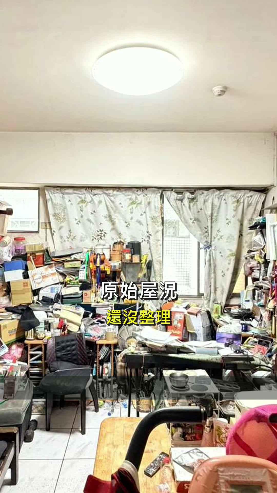
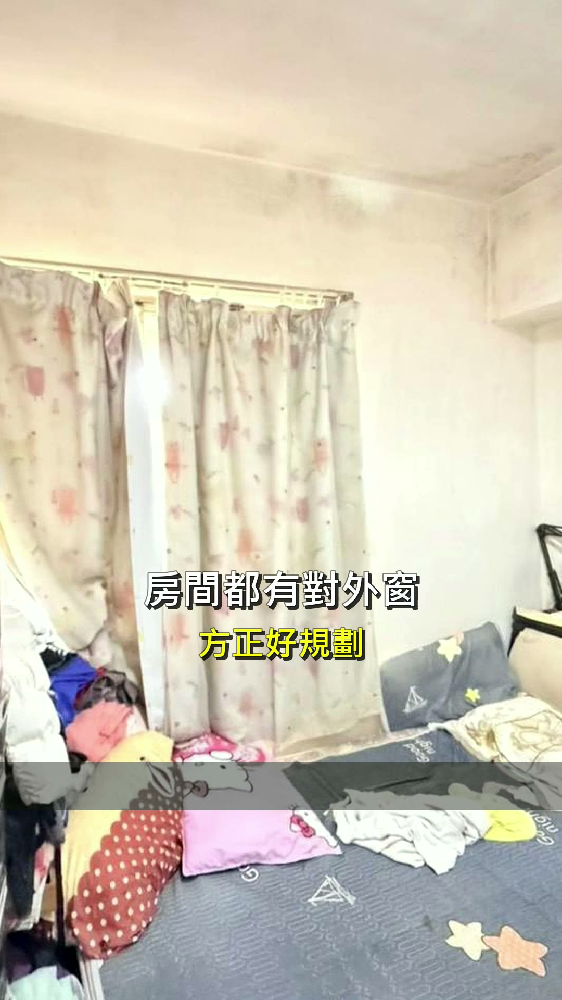
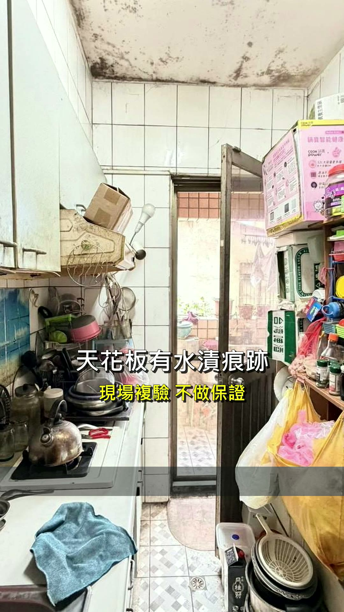
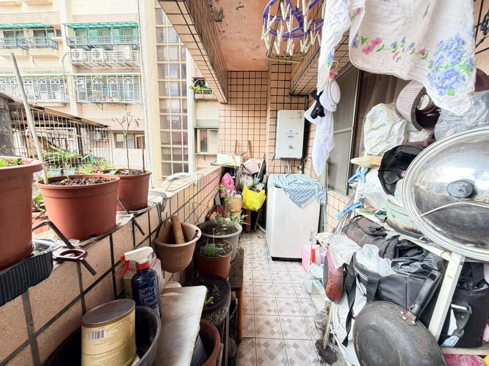
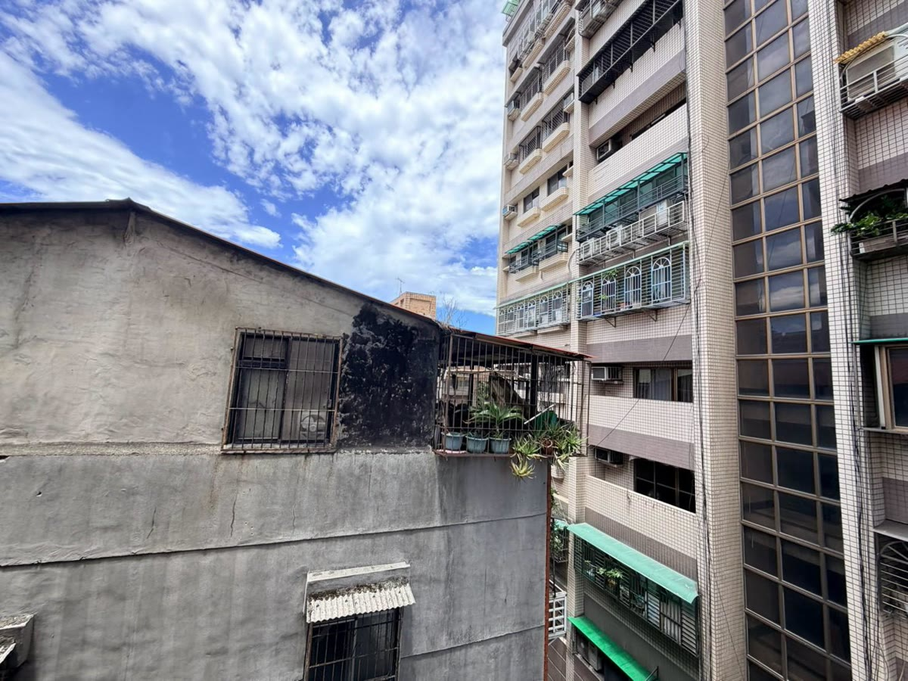
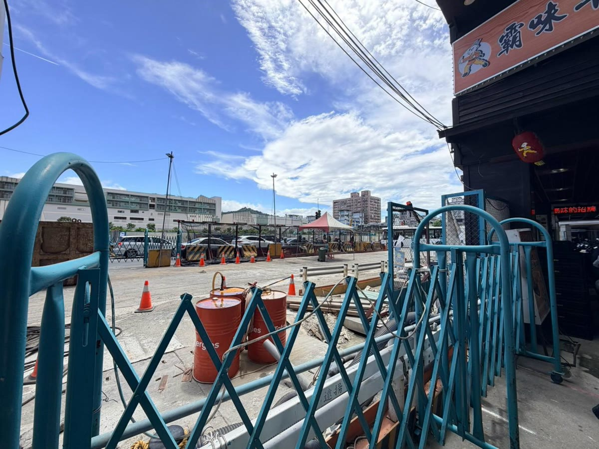
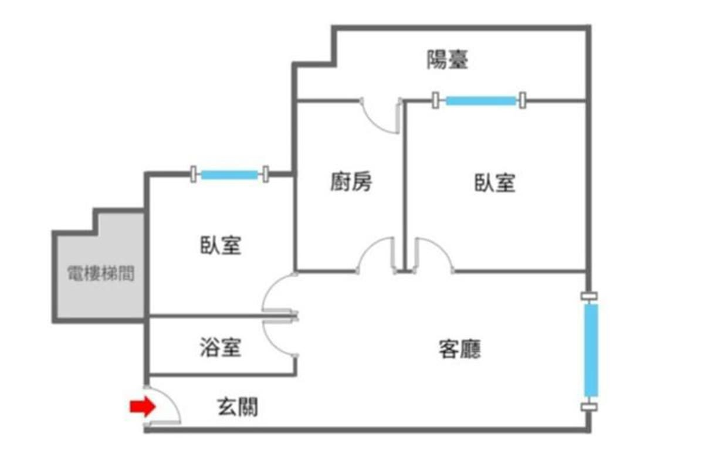

全揭露版
18.8 坪・2房1廳1衛
屋齡 32 年・本戶 6 樓
地上 12 層／地下 1 層
公設比 9.4%
1088 萬買下之後
你還要花多少
這一頁是給認真在看「土城龍傳家 捷運 LG09 站電梯兩房」的人。缺點、風險、要花的錢、怎麼驗，一次講完——不是等你來看屋當天才發現。
物件資料查核日期 2026-08-21｜修繕費用行情查證日期 2026-08-22｜本頁不揭露完整門牌與委託內部價格資訊
先算錢：你的月付會是多少
看房子最怕的不是不喜歡，是喜歡了才發現扛不動。所以錢的事放在最前面——先看數字，再決定要不要花時間跑一趟。
開價（無車位）
1088 萬
開價不等於成交價，也不代表議價空間，最終金額由買賣雙方議定。
首付（自備款）
217.6 萬
總價 1088 萬 − 貸款 870.4 萬
月息（首月利息）
17,662 元
首月本金約 16,436 元
每個月真正要付的，不只是房貸
- 房貸月付款 34,098 元（依下方試算條件，實際以承貸銀行核准為準）。
- 管理費 900 元（依委託資料，實際金額以管委會為準）。
- 停車月租：本戶沒有車位，需要停車的話這是每個月的固定支出。周邊行情以停車場業者當下公告為準，帶看那天我陪你走一趟問清楚。
- 火險與地震險：辦房貸的銀行通常要求投保，多為一年一期，保費依保額與投保內容由保險公司核定。
已知的兩筆是房貸 34,098 元＋管理費 900 元＝每月至少 34,998 元；停車與保險依你的需求另計，本頁不編數字。抓月支出時請以「至少 34,998 元」起算，不要只看房貸那一個數字。
試算條件寫在這裡，不是藏起來
30 年期・年利率 2.435%・無寬限期・本息平均攤還・貸款 8 成。這些是預設值，不是你的條件。成數、利率、年限每個人不一樣，實際以承貸銀行核准為準——尤其本案屋齡 32 年，屋齡加貸款年限銀行內部通常有上限，出價前先做貸款預審。
用試算工具改成你的條件（已帶入 1088 萬）
工具站預設是兩段式利率（前 2 年 2.185%、第 3 年起 2.435%），算出來是首期月付 32,983 元、跳息後 34,032 元，跟上面卡片的 34,098 元差在利率設定不同，不是哪一邊算錯。
首付之外，這幾筆也要進預算
- 契稅、印花稅、代書費、地政規費與登記費、火險與地震險（怎麼問到金額，見「常見問題」的稅費那一題）。
- 這間一定要算的清運與整理費用——屋主自住 32 年，交屋不等於空屋（金額區間見「風險・維修・費用・驗屋」）。
- 驗屋費用（見「驗屋要花多少錢」，本案 18.8 坪對應的區間都列出來了）。
- 沒有車位，如果你需要停車，周邊月租是每個月的固定支出。
上面四項本頁的月付卡都未計入。真正的入手成本是「總價＋稅費規費＋整理清運＋驗屋」，不是總價本身——整理清運的合計就在下面這張卡。
把修繕算進去：1088 萬之外還要準備多少
全頁修繕＋清運合計（下限～上限）
約 3.0 萬～8.5 萬
「風險・維修・費用・驗屋」裡會動到修繕與清運的三條（風險 02 清運＋03 水電＋05 粉刷）粗抓區間相加＝$22,500～$69,000。風險 01 天花板水漬經確認為舊痕、非現行漏水，處理已含在粉刷內，不另計抓漏費。修繕預算另計，實際以現場估價為準。
入住總成本
約 1094.9 萬
開價 1088 萬＋修繕上限 6.9 萬（$69,000）
修繕若全額自備，首付要多準備
＋8.5 萬
貸款仍只算總價 × 8 成，修繕不在貸款裡：217.6 萬 → 約 226.1 萬
修繕上限若改分期
每月約 +333 元
同試算卡條件：30 年期・年利率 2.435%・本息平均攤還（月付係數 0.0039175）
驗屋與檢測另計
另計
中古屋驗屋 $15,000～$24,000／戶、複驗 $4,000～$6,000／次（PRO360 驗屋報價頁 2025-06-12）；電路檢測 $100～$500／次（PRO360 水電報價頁 2025-08-11）——都不在上面合計裡。天花板已確認非現行漏水，不需要漏水初勘與儀器抓漏那兩筆
合計怎麼來的：風險 01 廚房天花板經確認為舊痕、非現行漏水，處理併入風險 05 全室粉刷，不單獨計列（原抓漏與壁癌預算 $7,000～$16,000 已移除）；風險 02 清運（1～2 車家戶廢棄物＋數件大型家具家電）$8,000～$20,000；風險 03 水電（專用迴路 2 迴＋局部換管 1 次，不拆除、清運不另計）$5,000～$12,000；風險 05 粉刷（全室 15 坪連工帶料＋舊屋翻新加價＋小量廢料清運，木地板與系統櫃不計）$9,500～$37,000；風險 04 共用設施分攤與 06 車位、捷運沒有本戶單獨的修繕費，不計入。數量是粗抓的假設，每一筆單價與出處都在各風險的「費用區間（附出處）」裡，三站數字不一致全部並列不取平均。
這些是上限粗估，不是報價。實際費用以現場估價為準；天花板水漬已確認是舊痕、不是現行漏水，不需要抓漏或重做防水那一段費用；清空交屋談成了，風險 02 那一條可以是 0。想把修繕費一起貸，可向往來銀行詢問裝修／修繕相關貸款方案，條件依各銀行規定。
三個先講清楚的誤會
這三件事如果先搞錯，後面看什麼都會偏。先把它擺正，再往下看。
「開價 1088 萬，那我準備 1088 萬就好。」
總價只是門票。這間是屋主自住 32 年的原始屋況，交屋後的清運、粉刷、水電檢測，加上稅費規費與驗屋，都要算進你的口袋。真正該問自己的是：1088 萬之外，我還拿得出多少。
成交價是多少，自己查最準：內政部不動產交易實價查詢服務網。
「廚房天花板有水漬，那就是壁癌，這間不能買。」
水漬要先分辨是乾掉的舊痕還是還在漏，兩者的處理方式與費用差很多——前者粉刷就好，後者可能要抓漏、重做防水。本案廚房天花板確實有水漬與發黑痕跡，經現場確認是舊痕、不是現行漏水，重新粉刷即可。痕跡我照實留在照片裡不修圖，下面也照樣教你怎麼自己驗一次；如果你驗出來跟這個說法不符，請立刻告訴我，我負責更正。
買賣雙方該揭露什麼、契約該怎麼寫，法規原文在全國法規資料庫（成屋買賣定型化契約應記載及不得記載事項）。
「捷運站約 50 公尺，那我現在就有捷運可以搭。」
捷運萬大線 LG09 站目前興建中，尚未通車。約 50 公尺（距離依 Google 地圖）買到的是未來性；通車之前，那裡是工地，圍籬、施工動線與噪音要自己到現場感受一次。通車時程以主管機關公告為準。
工程進度看官方的：臺北市政府捷運工程局（萬大－中和－樹林線）。
影片與屋況實照
先講清楚這支影片是什麼，你才不會抱著錯的期待點下去。
本案完整動線影片尚未拍攝，此為開箱精華版
下面這支是 27 秒的社群版無人開箱剪輯，畫面全部是現場實拍照片，沒有虛擬佈置、沒有修圖，字卡是剪輯留下的。它不是逐間走完的完整帶看動線影片——屋主目前自住中，完整動線影片還沒拍。要逐間看細節，跟我約時間到現場，比任何影片都準。
屋況實照：屋主住了 32 年，現況就是這樣
以下為現場實拍照片，沒有修圖、沒有虛擬佈置，亂就亂給你看。

客廳：雜物是現況不是佈置，整理程度照實給你看。

房間：這一間有對外窗，現況有人居住。依委託資料，兩間臥室均有對外窗，格局圖上也都繪有窗，實際仍以現場為準。

廚房：天花板有水漬與發黑痕跡，經現場確認是舊痕、不是現行漏水，重新粉刷即可。痕跡照實拍給你看，沒有修圖。

後陽臺：熱水器與洗衣機現況。

往萬大線 LG09 站（興建中）方向，約 50 公尺（距離依 Google 地圖）。

周邊街景現況。照片與影片皆為現況實拍，未使用虛擬佈置或裝潢示意圖。
格局圖與室內動線
格局圖完整放，不遮不糊。看得懂格局，你才知道自己買的是什麼——以下每一項我都直接說，包含不好的那幾項。

格局圖由委託方提供，未經修改。格局、面積與範圍最終以地政謄本、建物測量成果圖、不動產說明書及買賣契約記載為準。
動線怎麼走
進門是玄關廊道，往右進客廳；客廳右側在格局圖上是一整面長窗。廚房在中央，往上接陽臺；兩間臥室分別配置在左右兩側，右側臥室直接連通陽臺。浴室在玄關進門後的左手邊，緊鄰電梯梯間側。以上依格局圖判讀，實際採光狀況請到現場親眼看一次。
陽臺只有一座（登記附屬建物 2.1 坪），廚房與右側臥室都可以進出它。
簡單講：公私分離做得出來——客廳與廚房在同一側，兩間臥室各自獨立，不用穿過房間去另一個房間。18.8 坪的兩房能有這樣的格局，空間不會白白浪費在走道上。
坪數怎麼分配（這決定你的整理報價）
| 項目 | 坪數 | 說明 |
|---|
| 主建物 | 14.94 坪 | 室內實際隔間空間，室內油漆與地板報價抓這一塊 |
| 附屬建物 | 2.1 坪 | 陽臺 |
| 共用部分（公設） | 1.76 坪 | 公設比 9.4% |
| 登記總坪數 | 18.8 坪 | 依委託資料，面積以地政機關登載為準 |
找師傅估價時，室內工程（油漆、地板）報主建 14.94 坪；陽臺 2.1 坪要另外講，因為陽臺通常不鋪木地板、外牆漆料也跟室內不同。整份工程總量是 14.94＋2.1＝17.04 坪。不要直接報 18.8 坪——那 1.76 坪的公設不在你家裡，報錯會多花錢。
格局上的三個缺點，我直接講
- 浴室在格局圖上沒有標示對外窗。兩間臥室與客廳的窗戶在圖上都畫得出來，浴室那一格沒有。無窗浴室的濕氣與發霉風險比較高，通常要靠抽風機或暖風機處理（暖風機安裝 $2,000～$3,500／台，來源：PRO360 水電報價頁 2025-08-11）。帶看那天請務必自己確認一次——以現場實際狀況為準。
- 浴室與其中一間臥室緊鄰電梯梯間。電梯運轉聲與梯間人聲會傳，與建物同齡的電梯尤其要留意。看屋時站在那間臥室裡，請人搭一趟電梯上下，你就聽得到答案。
- 只有一套衛浴。兩房一廳一衛，兩人以上同時作息會互相卡；格局圖上也看不到可以再增設衛浴的位置。這一項不是缺陷，是產品定位——它適合一到兩人，不適合三代同堂。
座向：朝東（依委託資料，未複核）
這張格局圖本身沒有畫指北標示。委託資料載明朝東，但這一項尚未經地政謄本或現場實測複核，我不把它當成已確認的事實寫給你——帶看時我會陪你在客廳長窗前用手機指北針再核一次，兩邊對得上才算數；對不上，以現場與官方圖為準，我會立刻更正這一頁。
- 帶看當天：站在客廳長窗前打開手機指北針，窗戶朝哪，那就是主要座向，跟委託資料現場對一次。
- 簽約前：向地政機關申請建物測量成果圖，圖上有正北標示，這是官方版本。內政部地政司數位櫃臺可線上申請。
座向、格局圖與範圍最終以地政謄本、建物測量成果圖、不動產說明書及買賣契約記載為準。
風險・維修・費用・驗屋
你現在心裡最想問的其實是一句話：「這間要再花多少才能住？」我不能給你報價，但我可以把每一項風險攤開，告訴你市場行情大概落在哪個區間、資料是哪一年、哪個網站來的，還有這一項到底該怎麼驗。所有區間僅供參考，實際費用以現場估價為準。每一項最後多一列「買方對策」：這筆錢怎麼算進預算、契約怎麼談、先做哪個、我能幫什麼——全頁合計在上面「把修繕算進去」那張卡。
風險 01
廚房天花板有水漬與發黑痕跡（經確認為舊痕，非現行漏水）
維修策略
- 成因已確認：是舊痕，不是現行漏水。所以不需要抓漏、不需要重做防水——那是這類屋況最花錢的一段，本案省下來了。
- 處理方式：刮除鬆動處、批土研磨、重新粉刷，就這樣。
- 建議併入全室粉刷一次做完，不要為這一塊單獨叫工——叫一次工的車馬與最低消費，往往比材料本身還貴。
- 雖然已經確認，仍請屋主把「無現行漏水」據實勾註在現況說明書上。這不是不信任誰，是你日後唯一拿得出來的書面憑據。
費用區間（附出處）
- 乳膠漆兩道 $500～$1,000／坪；批土研磨 $100～$300／坪｜PRO360 油漆報價頁 2025-09-30
- 北部連工帶料 $900～$1,600／坪；舊屋翻新加價 $300～$800／坪｜100室內設計 油漆報價文 2025-12-14
- 局部天花板重新粉刷 加價約 $100～$300／坪｜100室內設計 油漆報價文 2025-12-14；PRO360 油漆報價頁 2025-09-30 列加價約 $100／坪
- 刮除批土等小量廢料清運 $500～$1,000／次｜找師傅945 油漆報價頁 2026-03-24
⚠️ 廚房天花板實際面積未量，本頁不預設坪數，也不替你算一個假的總額。處理建議併入下面風險 05 全室粉刷（15 坪 $9,500～$37,000），那個區間已經含天花板局部加價，不會重複計算。同一工種三站數字不一致是常態，這裡全部並列不取平均——差異本身就是資訊。上列是市場公開區間，不是本案報價。
怎麼驗
- 帶水分計到現場，量水漬處與周邊牆面，數值差異會說話——已經確認是舊痕，你自己再驗一次更安心，我不會攔你。
- 看賣方填寫的不動產標的現況說明書（賣方對屋況逐項勾註的揭露表，買賣端在成屋買賣定型化契約裡稱「建物現況確認書」），確認此處有據實勾註。這份我會主動幫你取得。
- 正式簽約前自費請驗屋單位以紅外線熱像儀複驗一次，這筆錢不要省。
- 雨天過後再去一次，是最便宜的驗證方法。如果你驗出來跟「非現行漏水」不符，立刻告訴我，我負責更正這一頁——寫錯比沒寫更嚴重。
買方對策（怎麼承擔）
- 預算怎麼算：這條不單獨計列費用——處理已含在風險 05「全室粉刷」那筆（15 坪 $9,500～$37,000）裡面，不重複算給你看。原本這條抓的 $16,000 抓漏與壁癌預算，因為確認非現行漏水而不需要了。
- 交易怎麼談：請屋主在現況說明書據實勾註「無現行漏水」，並在驗屋時一併複查。已確認的事寫成白紙黑字，日後才有依據。
- 處理順序：安全（電／結構）→ 管線 → 美化，這條屬第三段「美化」——清空與水電做完之後再粉刷，順序顛倒會白做一次。
- 我能做的：代約油漆師傅估價並做報價單比價、把屋況與修繕條件寫進契約建議、驗屋時陪同複查、交屋清點。
維修策略
- 先談清楚是現況交屋還是清空交屋，這一句話的差別，就是下面那幾筆清運與搬運費用要不要由你付。
- 如果是現況交屋，清運費用由你負擔，就要在出價時算進去，而不是交屋後才發現。
- 清運與粉刷分兩批做：先清空、再看見真正的牆面與地板狀況，然後才決定要修到什麼程度。
費用區間（附出處）
- 家戶廢棄物清運 $4,000～$7,500／車｜PRO360 清運報價頁 2025-06-12
- 廢棄物處理（3.5 噸車）$3,000～$8,000／車｜找師傅945 拆除清運報價頁 2026-03-24
- 大型家具：沙發 $400～$5,000／件、床墊或床架 $500～$2,500／件、衣櫃或櫃體 $300～$1,000／件｜PRO360 清運報價頁 2025-06-12
- 大型家電：冰箱 $700～$1,000／件、冷氣或洗衣機或電視 $200～$1,000／件｜PRO360 清運報價頁 2025-06-12
- 樓層搬運加價 約＋$500／層｜PRO360 清運報價頁 2025-06-12。本戶 6 樓有電梯，是否加價以業者現場認定為準
- 搬家：經濟型 $2,500～$3,000／車、精緻型 $4,000～$5,000／車｜PRO360 搬家報價頁 2025-06-03。找師傅945 搬家報價頁 2026-03-24 列基本行情 $3,000～$10,000／次
- 簽搬家合約前，對照政府公告的搬家貨運定型化契約範本（行政院消費者保護處），該給的條款不要少。
清運要幾車，取決於實際物量，現場估價才算數。本案先粗抓 1～2 車家戶廢棄物＋數件大型家具家電＝約 $8,000～$20,000 當預算上限（單價見上列）；上列是市場公開區間，不是本案報價。
怎麼驗
- 看屋時把每個房間、陽臺、儲藏空間都拍下來，清運業者看照片才報得出價。
- 點交當天逐項清點，對照契約寫的交屋範圍。
- 清空之後、交屋之前，再走一次現場——東西搬走才看得到的牆面與地板問題，那時候才會露出來。
買方對策（怎麼承擔）
- 預算怎麼算：清運粗抓 $8,000～$20,000（1～2 車家戶廢棄物＋數件大型家具家電，單價見上列），這條先抓上限 $20,000 加進「入住總成本」；想把整理費一起貸，可向往來銀行詢問裝修／修繕相關貸款方案，條件依各銀行規定。
- 交易怎麼談：可協商屋主交屋前自行清空，或留物由契約約定折價／價金保留，交屋時可要求淨空點交。
- 處理順序：排在所有工項之前，清空才能驗屋、才能施工。
- 我能做的：代約清運公司估價並做報價單比價、把清運與點交條件寫進契約建議、交屋清點。
風險 03
屋齡 32 年，室內水電管線是否更新過待查
維修策略
- 直接問屋主：配電、給水、排水管線有沒有換過，什麼時候換的。
- 清點插座數量與位置，對照你的家電需求；老屋常見的是插座不夠、迴路不足。
- 冷氣、電熱水器、電陶爐這類大電流設備要走專用迴路，這筆要先算。
費用區間（附出處）
- 電路檢測 $100～$500／次｜PRO360 水電報價頁 2025-08-11。找師傅945 2026-03-24 列 $300～$500／次；100室內設計 2025-12-11 列線路檢測 $500～$1,200／次
- 專用迴路 $2,500～$3,500／迴｜PRO360 水電報價頁 2025-08-11。找師傅945 2026-03-24 列迴路安裝 $2,000～$3,000／個
- 明管拉線 $2,000～$3,500／迴；暗管拉線 $3,500～$4,500／迴｜100室內設計 水電報價文 2025-12-11
- 插座安裝更換 $150～$1,000／個；開關面板更換 $500～$700／個｜PRO360 水電報價頁 2025-08-11
- 通水管 $3,000～$5,000／支｜PRO360 水電報價頁 2025-08-11
- 水管配管（局部換管）$1,000～$4,000／次｜PRO360 水電報價頁 2025-08-11。找師傅945 2026-03-24 列水管配管／移位 $1,000～$5,000／次
- 熱水器安裝 $500～$800／座；冷氣安裝 $1,200～$5,000／台｜PRO360 水電報價頁 2025-08-11
- 基本出勤費（車馬費）$500～$800／趟｜100室內設計 水電報價文 2025-12-11
上列為市場公開報價區間，不是本案報價；實際費用以師傅現場估價為準。
怎麼驗
- 帶一個插座測電器，全室插座逐個測通電與極性。
- 打開所有水龍頭同時放水，看水壓有沒有明顯掉；再看排水速度與有無回味。
- 看電箱：無熔絲開關的數量、標示是否清楚、有沒有明顯改裝痕跡。
- 這幾項驗屋公司都會驗，但你自己先看過，議價時才問得出重點。
買方對策（怎麼承擔）
- 預算怎麼算：這條先抓上限 $12,000（專用迴路 2 迴 × $2,000～$3,500＋局部換管 1 次 $1,000～$5,000＝$5,000～$12,000，不拆除、清運不另計；電路檢測與驗屋另計）加進「入住總成本」；插座、開關、熱水器與冷氣安裝屬設備更新，依你的需求另計。想把修繕費一起貸，可向往來銀行詢問裝修／修繕相關貸款方案，條件依各銀行規定。
- 交易怎麼談：檢測或估價單出來後可依報價議價，契約可約定屋主交屋前修復或價金保留，可要求交屋前複驗。
- 處理順序：安全（電／結構）→ 漏水防水 → 管線 → 美化，這條在第一段「安全」與第三段「管線」，入住前做完，而且要在油漆之前——拉線打牆會弄髒牆面。
- 我能做的：陪同複驗、代約水電師傅估價並做報價單比價、把修繕條件寫進要約或契約建議、交屋清點。
風險 04
32 年共用設施：電梯、水塔、外牆與修繕基金
維修策略
- 管理費每月 900 元收得低（依委託資料，實際以管委會為準），相對要看修繕基金夠不夠因應外牆、電梯、水塔這些共用修繕。
- 調閱電梯保養紀錄與有無汰換計畫——與建物同齡的電梯（是否曾汰換過待查）若面臨大修或更換，是全體住戶分攤的大筆支出。
- 問有沒有排定中的外牆整修、管線更新或都更整合，這些會變成未來的分攤金。
費用區間（附出處）
無本戶單獨的修繕費用，屬交易條件——共用部分的修繕由公共基金或全體區分所有權人依規約分攤，不進本頁修繕合計。下列只是讓你知道量級：
- 換水塔（含水塔）$10,000～$30,000／座；水塔清洗 $1,000～$2,500／次｜PRO360 水電報價頁 2025-08-11
- 高空作業（外牆施工人力）$6,000～$10,000／人／天｜找師傅945 防水報價頁 2026-03-24
- 外牆塗防水漆 $600～$1,200／坪；外牆重做防水（彈性水泥）$2,000～$3,000／坪｜找師傅945 防水報價頁 2026-03-24
共用部分的費用不是由你單獨負擔。依《公寓大廈管理條例》第 10 條，共用部分的修繕、管理、維護費用由公共基金支付或由區分所有權人按其共有之應有部分比例分擔，但規約另有規定者從其規定——所以要看你們社區的規約怎麼寫，不能一律套比例。實際金額與是否施作以區分所有權人會議與管委會決議為準。這裡列出來，是讓你知道「修繕基金不足」代表的量級。法條原文見全國法規資料庫。
怎麼驗
- 這一塊驗屋公司不驗，要自己問管委會或總幹事。
- 查出來修繕基金確實偏低怎麼辦：把「可預見的大額共用修繕」當成議價依據具體提出來（例如電梯汰換、外牆整修），或直接把它算進你的持有成本再決定要不要買。不用因為一項就走人，但也不要當作沒看見。
- 要看的三份東西：最近一次區分所有權人會議紀錄（就是社區住戶大會的會議紀錄）、修繕基金餘額、電梯保養合約與紀錄。
- 繞外牆走一圈，抬頭看有沒有磁磚剝落、滲水痕跡、鋼筋外露。
- 看頂樓與地下室的公共空間，那裡最誠實。
買方對策（怎麼承擔）
- 預算怎麼算：無本戶單獨的修繕費用，不進修繕合計；管理費 900 元／月先列進每月支出，可預見的大額分攤（電梯汰換、外牆整修、水塔更換）等管委會資料到手再抓量級，列進持有成本。
- 交易怎麼談：可要求屋主提供最近一次區分所有權人會議紀錄、修繕基金餘額與電梯保養紀錄；已決議未繳的分攤金或欠繳管理費，可約定由屋主交屋前結清或價金保留，交屋前可要求管委會出具無欠繳證明。分攤方式依《公寓大廈管理條例》與社區規約，有疑義可向主管機關查詢，依官方答覆為準。
- 處理順序：不是修繕，是出價前的查證——上面「怎麼驗」那三份文件看完再出價。
- 我能做的：陪同向管委會或總幹事索取三份文件、把欠繳結清與分攤金條款寫進契約建議、交屋清點時一併核對管理費結算。
維修策略
- 先做「能住」的最低限度：清空、粉刷、水電到位、必要的防水處理。其餘住進去再慢慢弄。
- 本案 18.8 坪、公設比 9.4%，室內坪數估算時記得用主建 14.94 坪＋附屬 2.1 坪去抓油漆與地板的量，不要拿登記總坪數去乘。
- 不要一開始就做木作。先住一季，你才知道自己真正需要什麼櫃子。
費用區間（附出處）
- 內牆油漆連工帶料（北部）$900～$1,600／坪｜100室內設計 油漆報價文 2025-12-14
- 舊屋翻新加價（修補、批土、防黴）＋$300～$800／坪｜100室內設計 油漆報價文 2025-12-14
- 水泥漆一道 $300～$500／坪；乳膠漆兩道 $500～$1,000／坪；乳膠漆三道 $1,000～$1,500／坪｜PRO360 油漆報價頁 2025-09-30，標示連工帶料
- 批土＋研磨 $100～$300／坪｜PRO360 油漆報價頁 2025-09-30
- 木地板 $800～$3,400／坪｜PRO360 木工報價頁 2025-06-24
- 系統櫃 $800～$1,500／尺｜100室內設計 木工報價文 2025-05-28
- 拆除工程 $1,000～$1,500／坪｜PRO360 泥作報價頁 2025-06-26
- 油漆批土等小量廢料清運 $500～$1,000／次｜找師傅945 油漆報價頁 2026-03-24
- 拆除後的裝潢廢棄物清運 $10,000～$15,000／車｜PRO360 清運報價頁 2025-06-12。找師傅945 拆除清運報價頁 2026-03-24 列廢棄物處理 $3,000～$8,000／車（3.5 噸）
這一列不是驗屋範圍，是預算問題。要精確金額，請師傅到現場估價。
怎麼驗
- 把「非做不可」跟「想要做」分兩張紙寫，第一張才是你出價前要算的錢。
- 至少找兩家報價，比的是工項寫得清不清楚，不是只比總價。
- 報價單要逐項列出工項、單位、數量與單價，只寫一個總價的不要簽。
買方對策（怎麼承擔）
- 預算怎麼算：先算「非做不可」那一張：全室粉刷 15 坪（主建 14.94 坪取整）＝$9,500～$37,000——低標用 PRO360 乳膠漆兩道 $500～$1,000／坪＋批土研磨 $100～$300／坪，高標用 100室內設計 北部連工帶料 $900～$1,600／坪＋舊屋翻新加價 $300～$800／坪，再加小量廢料清運 $500～$1,000，這條先抓上限 $37,000 加進「入住總成本」；木地板、系統櫃屬「想要做」，住過一季再決定，不進這次合計；若有拆除，裝潢廢棄物清運另計。想把整理費一起貸，可向往來銀行詢問裝修／修繕相關貸款方案，條件依各銀行規定。
- 交易怎麼談：這條是你要住的標準，不是屋況瑕疵，通常不會寫成修復條款；可在出價時把整理費當成你評估總價的依據具體提出，最終金額由買賣雙方議定。
- 處理順序：安全（電／結構）→ 漏水防水 → 管線 → 美化，這條是最後一段「美化」——清空、水電、天花板水漬都處理完才進油漆；能入住後再做的（地板、櫃子）就往後排。
- 我能做的：代約油漆師傅估價並做報價單比價（報價單要逐項列工項、單位、數量、單價）、交屋清點。
維修策略
- 沒有車位：先確認周邊停車場位置、月租金額與是否還有名額，這是每個月的固定支出，不是一次性費用。土城區的停車場位置可先用停車場位置查詢自己看過一輪，再到現場問月租。
- 捷運興建中：買的是未來性。若你的用錢計畫撐不到通車，那這個優勢對你不成立——這句話我不美化。
費用區間（附出處）
無修繕費用，屬使用限制／交易條件，不進本頁修繕合計。這兩項在修繕行情資料裡沒有對應的公開報價，以現場實際洽詢與估價為準——周邊車位月租行情請以停車場業者當下公告為準，我陪你走一趟實際問。這裡不編數字給你。
怎麼驗
- 白天與傍晚各去一次，感受採光、音量與施工噪音的差別。
- 走一次你實際會走的路線：從社區大門到未來站體位置、到停車場、到市場。
買方對策（怎麼承擔）
- 預算怎麼算：這條不進修繕合計；停車月租問到後加進每月固定支出（跟房貸 34,098 元、管理費 900 元一起列）；出價不用「通車後的價」算，通勤也用現在的交通條件算。
- 交易怎麼談：車位不是本標的的一部分，無法約定；捷運時程不是屋主能承諾的事，不列契約條件；兩者都可納入你的出價考量。捷運進度可向主管機關查詢，依官方公告為準。
- 處理順序：簽約前確認——先用停車場位置查詢工具看一輪，再到現場逐家問空位與月租、問管委會有無可承租車位；平日上下班時段到工地圍籬旁走一次。
- 我能做的：陪你繞周邊問月租與空位、把結果列進每月支出試算、陪你到現場走一次並提供主管機關公告的查證入口。
驗屋要花多少錢
很多人卡在這裡：多花一筆錢驗屋，好像很浪費。但這間有一片還沒查證的天花板水漬——跟買錯之後才發現的代價比，這筆很值得花。本案登記 18.8 坪、屋齡 32 年，三種計價口徑的區間直接列給你。
| 項目 | 單位 | 價格區間 | 來源與更新年份 |
|---|
| 按坪計價 | 坪 | $500～$1,000 | PRO360 驗屋報價頁 2025-06-12 |
| 20 坪以下 | 戶 | 約 $12,000 | PRO360 驗屋報價頁 2025-06-12 |
| 中古屋（未分坪數）｜本案屬此類 | 戶 | $15,000～$24,000 | PRO360 驗屋報價頁 2025-06-12 |
| 一般行情（按坪） | 坪 | $500～$1,000 | 鴻宇健康驗屋 2025-07-06 |
| 複驗 | 次 | $4,000～$6,000 | PRO360 驗屋報價頁 2025-06-12 |
| 複驗（按比例） | 次 | 初驗費 5～7 成 | 鴻宇健康驗屋 2025-07-06 |
| 小坪數新成屋（供對照） | 戶 | $8,000～$15,000 | 房屋管家 hemahouse 2026-04-29 |
本案驗屋要特別指定的三件事
- 紅外線熱顯像儀：查廚房天花板水漬範圍與是否仍有濕氣（鴻宇健康驗屋 2025-07-06 明列此儀器）。
- 水分偵測器：量牆體與天花板含水率，分辨舊痕與進行中的滲漏（同上來源）。
- 全室插座通電與排水測試：32 年屋齡的重點不在美觀，在管線。
三種口徑怎麼取捨：本案是屋齡 32 年的中古屋，實務上多以「中古屋」那一列報價，抓 $15,000～$24,000 比較保險；按坪計價（18.8 坪推算約 $9,400～$18,800）與「20 坪以下約 $12,000」兩列偏低，多對應屋況單純或新成屋的案件，列在這裡是給你對照與議價用的。三站沒有一站把中古屋再依坪數細分，本頁也不自行推估。價格區間僅供參考，實際費用以驗屋單位現場報價為準。
更多工種的行情，我整理在另一頁
泥作、油漆、廁所防水、水電、木工、清運、搬家、驗屋的完整報價區間與出處，都在這裡。
看修繕報價行情整理頁
看到什麼就該停手
以下是中古屋的通用風險訊號，不是針對本案的判定。出現任何一項，先暫停，找專業的人到現場看過再往下談——房子跑不掉，錢跑掉了就回不來。
1
樑柱有斜向或貫穿性裂縫。
牆面細裂多半是粉刷層問題，出現在樑、柱、剪力牆上的裂縫性質完全不同，要結構技師判斷。
2
謄本上有查封、假扣押或預告登記。
產權問題不會因為屋況單純就消失。先請地政士協助釐清清償與塗銷順序。
3
滲漏還在進行中，賣方卻不願寫進現況說明書。
修復責任與費用要白紙黑字，口頭承諾在交屋後沒有用。
4
謄本登載用途與現況使用明顯不符。
先請地政士或建管單位協助釐清再往下談，不要自己猜測解讀。
5
登記坪數、格局與現場隔間對不上謄本或使用執照。
差異可能來自增建或隔間變更，涉及違建查報與貸款成數，先查清楚。
6
對方無法提供正式委託文件或合約編號。
合理的委託應該可以出示正式文件，遇到刻意迴避要多問一句為什麼。
接下來三步怎麼走
看到這裡你大概心裡有數了。接下來的順序很重要——順序錯了，會花冤枉錢。
第 1 步
先做貸款預審，不是先看屋
本案屋齡 32 年，屋齡加貸款年限銀行內部通常有上限，成數與年限會直接改變你的月付款。先問過至少兩家銀行，知道銀行給你多少，再決定要看哪個總價帶的房子。
怎麼做：準備身分證、最近一年的收入證明或扣繳憑單、勞保投保明細、名下貸款與信用卡的現況，帶著本案的總價與屋齡（1088 萬、32 年），直接約銀行房貸專員談。要問清楚這四件事：成數、貸款年限、利率（含是否為兩段式）、有沒有寬限期。
預審不等於正式申貸，但多數銀行會請你授權查詢聯徵，查詢紀錄會留存，短期內找太多家是會被後面的銀行看到的——所以先挑兩家談就好，不要一次跑五家。是否收取估價費或開辦費依各家銀行規定不同，談之前先問。
第 2 步
看屋當天分兩條路走
如果你能接受自己發包整理：重點放在「清運要幾車、水電要不要重拉、天花板水漬的範圍」，這三項決定你的整理預算，也決定你的出價。
如果你要買了就能入住：那要先誠實面對——這間是屋主自住 32 年的原始屋況，中間一定有一段整理期。時間成本（租金或通勤）也要算進總成本，再回頭比同總價帶的整理好可入住物件，哪個對你划算。
兩條路沒有對錯，怕的是心裡想著第一條、生活節奏卻是第二條。
第 3 步
出價之前，先把三份文件看過
建物與土地謄本、不動產標的現況說明書（賣方逐項勾註屋況的揭露表）、社區最近一次區分所有權人會議紀錄（社區住戶大會的紀錄）。前兩份是我的工作，我會主動調好給你，不用你開口要；第三份要向管委會或總幹事索取，帶看那天我陪你一起問。
你也可以自己來：謄本從內政部地政司數位櫃臺線上申請就有，不用透過任何人。我把路徑寫出來，是因為你有權自己查證，不是只能相信我說的。
看完這三份，你出的價才有依據，不是憑感覺砍。
用官方 LINE 跟我約看屋時間
官方查核入口
這些不要只聽我說。下面每一個都是政府或主管機關的官方入口，你自己點進去查，查到跟我寫的不一樣，以你查到的為準，我也會立刻更正這一頁。
常見問題
這幾題是看完資料之後最常被問到的。答案都寫在這裡，不用等私訊。
1088 萬可以議價嗎．我該出多少
開價不等於成交價，也不代表議價空間，最終金額由買賣雙方議定。委託方交付的內部價格資訊我不會外流，那是我對委託人的義務，跟你買不買得到沒有關係——但「你該出多少」這題我可以直接教你算，不用私訊問我：
第一步：查實價。到內政部不動產交易實價查詢服務網，選「新北市土城區」，用社區名稱或路段查最近一年的成交紀錄，把屋齡、樓層、坪數與本案接近的挑出來看。
第二步：把整理費扣回去。你查到的成交行情，多半是屋況整理過的房子。這間是自住 32 年的原始屋況，你要把清運、粉刷、水電、天花板水漬處理的預估金額（區間都在「風險・維修・費用・驗屋」那一段），從行情裡扣掉——那才是這間對你的合理價。
第三步：用你的月付款倒推。先確定你每個月付得起多少，回推總價上限，再跟前面兩步的數字對照。三個數字裡最小的那個，就是你的出價天花板。
出價是你的權利，我的工作是把資料備齊讓你算得出來，不是替你決定金額，也不會催你加價。
買下來要繳哪些稅費．大概什麼時候繳
買方這一端常見的有：契稅（向地方稅捐稽徵處申報，稅基是房屋評定現值，不是成交價）、印花稅、地政規費與登記費、代書費（地政士服務報酬，市場行情依案件複雜度不同）、火險與地震險（辦房貸的銀行通常要求投保）。若有貸款，還有設定規費與銀行相關手續費。
這一筆最常被漏掉，因為它不在你跟屋主談的那個數字裡——談完價格才冒出來，最傷。我不在這裡寫金額，是因為契稅的稅基是房屋評定現值，每一戶都不一樣，我編一個數字給你只會害你抓錯預算。但你不用等到簽約才知道，三步就問得出來：
一、拿到房屋評定現值。向屋主索取最近一期的房屋稅繳款書，上面就有這個數字——這件事我來要，你不用開口。
二、用它去試算契稅。拿著這個數字打給新北市政府稅捐稽徵處（或用該處網站的稅額試算），問「這個評定現值的買賣契稅是多少、什麼時候要申報」，他們會直接告訴你金額與期限，這是最準的答案。稅率與申報期限的法條原文在全國法規資料庫（契稅條例、印花稅法）可以自己對。
三、請代書先給費用明細。代書費、地政規費與登記費、設定規費不是稅，是服務與行政費用，可以在簽約前就請地政士報一張明細出來，貨比兩家也可以。火險與地震險由承貸銀行配合的保險公司報價，保費依保額而定。
實際稅額以新北市政府稅捐稽徵處核定為準。簽約後代書也會列一張完整的費用明細，但那時候你已經沒有議價空間了——所以要提前問。
阿宏這邊常用的稅務整理放在房地稅務常見問題，賣方端的稅在那裡講得比較細。
18.8 坪的兩房，兩個人住會不會太擠
主建物 14.94 坪、陽臺 2.1 坪，格局是兩房一廳一衛加獨立廚房。以一到兩人自住來說空間是夠的，而且格局方正、公私分離，不會有那種穿過房間才能到另一個房間的浪費動線。
但要誠實講兩件事：只有一套衛浴，兩個人作息時間重疊會卡；收納空間有限，格局圖上沒有獨立儲藏室，18.8 坪要住得舒服，收納一定要在裝修時就規劃進去。如果你的家庭成員未來會增加到三人以上，這間會在幾年內就變小——那不是它的問題，是產品定位的問題，先想清楚比較好。
整理那段期間，我要住哪裡
這是很多人忽略掉的成本。以本案的狀況（先清空、再處理天花板水漬、粉刷、水電到位），你在交屋後到入住前這段期間，房租或跟家人同住的安排要先想好，而且要把那段時間的房租＋房貸雙付算進總預算。
工期長短取決於你要做到什麼程度，這一題沒有標準答案，等師傅現場估價才知道。但預算要抓，不要等到交屋才發現兩邊都要付。
這間以後好不好賣
我不會對未來的價格做任何預測，那不是我能承諾的事。可以客觀講的是這間的條件在轉手時分別代表什麼：低總價、電梯、公設比 9.4%、兩房——這些條件對應的接手客群是首購與小家庭；反過來，沒有車位、屋齡會再往上走、只有一套衛浴，這些條件在轉手時同樣會被下一個買方拿出來談。
捷運通車與否是變數，不是既定事實。真正影響好不好賣的，是你買進的價格與屋況整理的品質——這兩件事在你手上，不在市場手上。
屋齡 32 年，銀行會不會不給貸
屋齡加貸款年限銀行內部通常有上限，會影響核貸年限與成數，但每一家銀行的標準不同，也跟你的收入、負債與信用條件有關。這一題沒有通用答案，做過貸款預審才會知道你的數字。實際成數、利率與月付以承貸銀行核准為準。
廚房天花板的水漬，是不是可以要求屋主先修好
可以談，但要談得具體：由誰修、修哪些範圍、修到什麼標準、費用誰出、什麼時候完成、沒做到怎麼辦，全部寫進買賣契約。只有口頭說法在交屋後沒有用。另一個常見做法是折價由買方自行處理，兩種方式各有利弊，要看驗屋結果才知道哪個對你划算。
公設比 9.4% 是不是特別低
依委託資料，本案 18.8 坪中公設占 1.76 坪。相對於近年新建大樓常見的高公設，這個比例確實低，代表你買的坪數幾乎都落在室內。但要一起看的是：低公設通常也代表公共設施少、管理費低，相對要確認修繕基金是否足以支應共用部分的維護。面積與範圍最終以地政機關登載為準。
捷運還沒通車，現在買會不會太早
這一題沒有標準答案，要看你的用錢計畫。如果你是自住、可以等，並且現在的通勤方式撐得住，那通車前你有比較長的決策時間；如果你需要短期內就有捷運可搭，那這個條件對你不成立。通車時程以主管機關公告為準，不要用未定的時間表去做確定的財務規劃。
為什麼影片這麼短，沒有完整走一遍
因為屋主目前自住中，完整動線影片還沒拍。那支 27 秒的是社群版開箱精華，畫面全部是現場實拍照片。與其剪一支看起來像完整帶看的影片給你，不如老實說這件事，然後約你到現場走一次。
查核依據與資料來源
每一個數字從哪裡來，我列給你自己驗。
- 開價、面積、格局、樓層、屋齡、管理費：住商不動產樹林站前加盟店委託銷售資料，資料查核日期 2026 年 8 月 21 日。登記面積與範圍以地政機關登載為準。
- 房貸試算（首付 217.6 萬、月付款 34,098 元、首月利息 17,662 元）：以 1088 萬總價、貸款 8 成、30 年期、年利率 2.435%、無寬限期、本息平均攤還模擬，非銀行核貸承諾。
- 修繕與清運、搬家、驗屋費用區間：引自 PRO360 達人網、100室內設計、找師傅945 三站公開報價頁，及房屋管家 hemahouse、鴻宇健康驗屋驗屋費用文，各筆已於文中標註來源站與該頁更新年份，行情資料彙整查證日期 2026 年 8 月 22 日。所有區間僅供參考，實際費用以現場估價為準。
- 影片與照片：現場實拍原始素材，未使用虛擬佈置、AI 生成裝潢示意圖或修圖。
- 廚房天花板水漬與發黑痕跡：現場實拍所見。成因經現場確認為舊痕、非現行漏水，處理方式為重新粉刷。此為屋況現況說明，非修復保證，仍請以你自己的現場複驗與驗屋結果為準；如驗屋結果與此不符，請立即告知，本頁負責更正。
- 捷運萬大線 LG09 站：興建中，尚未通車。距離約 50 公尺依 Google 地圖量測，通車時程以主管機關公告為準。
- 座向與格局圖：座向依委託資料載明為朝東，尚未經謄本或現場實測複核，本頁以「未複核」標示呈現，不作為已確認事實；格局圖由委託方提供、未經修改，見「格局圖與室內動線」區塊。面積、座向與範圍最終以地政謄本、建物測量成果圖、不動產說明書及買賣契約記載為準。
- 同社區成交紀錄：本頁未列具體成交數字，請自行至內政部不動產交易實價查詢服務網查證。開價不等於成交價，也不代表議價空間，最終金額由買賣雙方議定。
本頁產權、面積、格局、現況等資訊整理自委託方提供之售屋資料與現場紀錄，僅供參考；如與地政機關核發之正式謄本、建物測量成果圖或使用執照不符，一律以官方謄本及正式登記資料為準。簽約前請自行申請最新謄本查證。本頁資訊僅反映資料查核日期當下狀況，具時效性，逾 30 天請向本人確認最新現況。
最後講一句人話
看到這裡，你已經被我塞了一堆要查、要問、要驗的事。老實說，那些都不是重點。
重點是這間房子把選擇權交回你手上——1088 萬買的是位置、電梯跟一個公設比 9.4% 的室內坪數；至於它現在長什麼樣子，那是屋主住了 32 年的生活痕跡，不是缺陷。你要付的整理費，換來的是「照你的方式重新開始」這件事。
所以真正要問自己的，不是「這間便不便宜」，而是「我願不願意，用一段整理期，換一個離未來捷運站約 50 公尺的家」。願意，那些水漬跟雜物就只是過程；不願意，再便宜都是壓力。
買對是資產，買錯是壓力。房子是人生風險的容器，不是誰的夢。
不管這一間最後是不是你的，願你這次做的決定，是自己想清楚之後做的。那樣的房子，住起來才會安穩。
免責聲明
這一頁能幫你把方向抓對，但每個人的狀況都不一樣——真的要動手之前，還是找專業的人幫你看過一次，那一趟不會白跑。
- 本頁為一般性資訊整理，不構成法律、稅務、財務或投資建議，也不因閱讀本頁而成立任何委任或諮詢關係。
- 資訊可能因法令修訂、物件狀況變動或個案事實而變動，作者與所屬經紀業不負擔依本頁內容所為之決定的法律責任。
- 實際個案請洽律師、地政士、會計師、稅務機關或各該主管機關確認後再行動；屋況與修繕請洽驗屋單位、結構技師或合格施工廠商到場評估。
本頁與相關影片文宣如有誤植，歡迎留言或私訊指正，我們會儘速查證更正。法令與官方資料以主管機關最新公告為準。
#何志宏 #新北房仲 #土城買房 #龍傳家 #電梯兩房 #買房懶人包 #中古屋整理費用 #天花板水漬 #驗屋費用 #低總價兩房